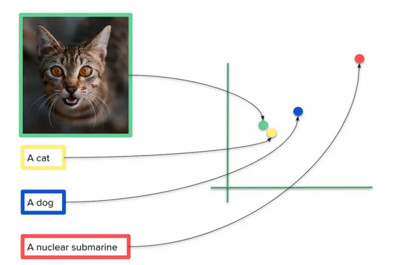
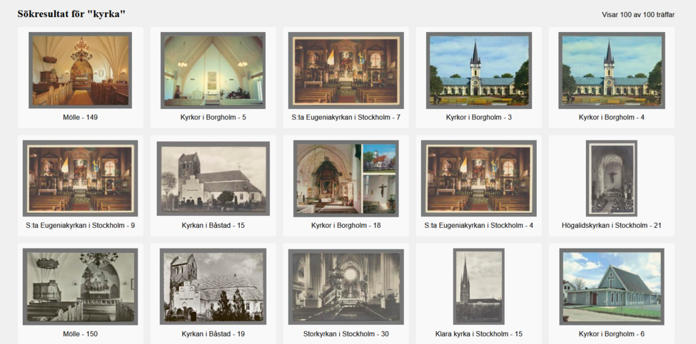
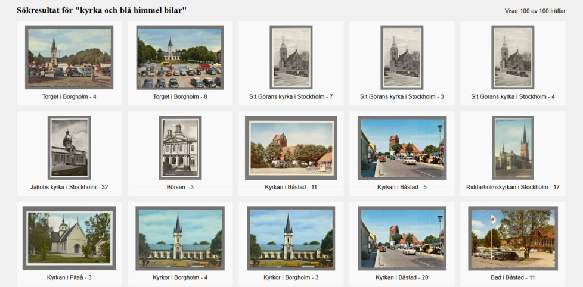
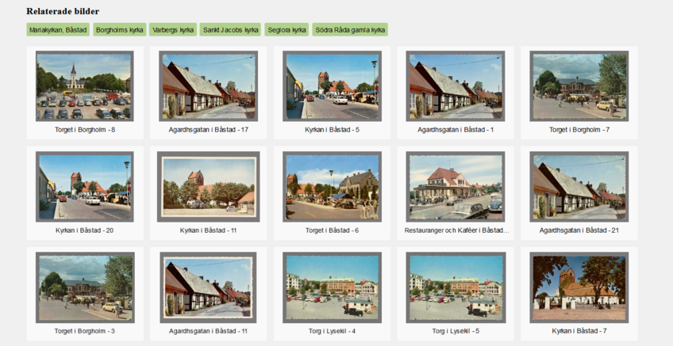
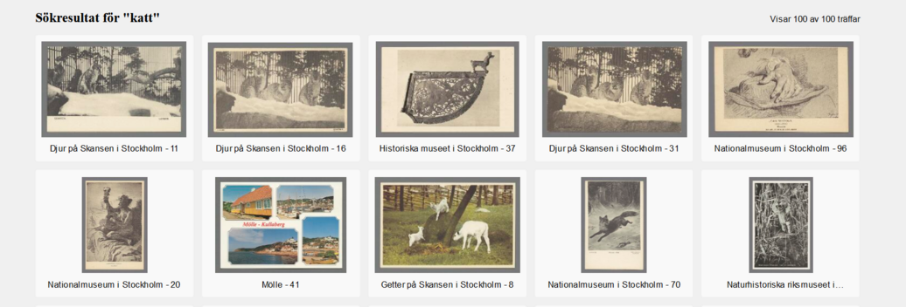

How can new AI methods be used to improve the searchability and accessibility of visual heritage collections? We’ve taken advantage of the possibilities opened up by multimodal AI models to produce a demo showcasing these capabilities via the example of postcards. Here we explain something about the project behind this and encourage you to explore our image search demo! https://lab.kb.se/bildsok
Memory institutions like KB can often be faced with a palpable sense of overload. Partly this is an effect of the proliferation of new material now being produced by digital culture. With the number of items delivered to the library via electronic legal deposit rapidly increasing, how is any sort of order to be maintained? But it is also a question of dealing with inherited archival blindspots, where previous historical moments of mass media expansion created the conditions for parts of the collections to remain undescribed. Without the metadata that would make them discoverable, such items have now largely been consigned to the realm of forgetting that Aleida Assmann has described as “the passively stored memory that preserves the past” (Assmann 2010).
A pertinent example of a material that, while preserved, lacks description - perhaps due to its perceived ephemerality historically and the limited valuation this has granted in terms of archival resources and attention - is visual heritage collections from the nineteenth and twentieth century. Descriptive cataloguing has long been a central part of KB’s making its collections accessible and searchable, but it has been impossible for each and every incoming item to be manually catalogued, given that legal deposit legislation dictates the library receives a copy of everything published in Sweden. Instead, certain items such as postcards or adverts have tended to be grouped together and classified under collective catalogue entries that often preclude the detailing of any specific information about the individual object per se.
Although KB has a rich and diverse collection of c. 600,000 postcards, the lack of navigability and overview entrenched by scarce metadata has made the material hard for users to access - or even to be aware of its existence. Despite being preserved as part of our shared cultural heritage, such items are thus at risk of disappearing from view altogether.
Recent developments within AI offer a promising strategy for libraries and other GLAM institutions with large collections of undescribed visual heritage to counter this archival forgetting and make such material more visible. The emergence of powerful multimodal AI models makes it possible to interact with huge amounts of images in new ways, with or without preexisting metadata. This is evident, for example, in the computer vision technology underpinning Google’s image search function, which we now tend to take for granted on the phones in our pockets.
By connecting the visual and textual domains in an innovative manner, multimodal AI has enabled more effective online search techniques, both in terms of text-to-image (i.e. image retrieval from a textual description) and image-to-image search (otherwise known as reverse image search, i.e. image retrieval from an image). The Open AI model CLIP was trained on a dataset of 400 million matching text-image pairs to learn to recognize visual concepts and their associated names - e.g. an image of a cat and “a photo of a cat” (Radford et al. 2021). This works via the use of vector space: through transforming the input text or image to a numerical representation (called embeddings), the AI model can return results based upon images with a similar representation (see fig. 1). When “church” appears in a text, for instance, the model will generate a similar number representation for both the word description and the visual manifestation of a church, thus collapsing the distinction between the different modes and making them directly comparable. Such a technique can be used to identify all the images containing a church in a large collection of images, regardless of whether these images have previously been described as such. In short, it offers content-based image search independent of prior metadata.

Figure 1: Matching similar images and texts within vector space. Image: Federico Bianchi.
We chose to explore the potential of this method for heritage material through a pilot project focused upon a selection of KB’s postcards. While the original version of CLIP was trained upon English text data, we turned to the Swedish adaptation of the model produced by (Carlsson et al. 2022), Swe-CLIP 2M, to enable free text search in Swedish. Since only part of the library’s postcard collection has been digitized, we could include 17,409 postcards in the project. Given that the back side of each postcard could include personal details such as names and addresses, we opted to employ only the front sides. Using this digital material as a dataset, we sought to investigate the relevance of cutting-edge AI search techniques in a library context.
Figure 2: Interface for postcard image search.
After close collaboration with the library’s developers, the project resulted in an image search demo, which, thanks to a recent licensing agreement, can now be openly accessed here. This amounts to an interface that allows these postcards to be searched according to either text or image search terms (see fig. 2), making a previously largely undescribed - and therefore undiscoverable - material amenable to the sort of granular search possibilities we are familiar with from online search engines.
The demo works by exploiting the multimodal capabilities of CLIP outlined above. So any text or image entered into the search box is run through the model, transformed into a numerical representation, and then compared with the equivalent representations for all of the postcards that have been previously processed and stored in a database. The search results are ranked according to (cosine) similarity, with the postcards with the closest representation to the search term appearing at the top of the list. Insofar as it prototypes a new entrance point to the collections, our demo provides a striking example of the transformative possibilities of vector databases for memory institutions.
As part of our wider mission at KBLab to contribute to wider use and discussion of AI tools for the heritage sector and beyond (Börjeson et al. 2023), we encourage you to try out the image search demo and play around with its capabilities. Here we would like to offer a few brief pointers about how to use the demo and understand the results.
The first option is free text search: you can provide the search box with either a general term - i.e. “kyrka” (fig. 3) - or a more specific set of terms, if you would like to find something more particular - i.e. “kyrka och blå himmel bilar” (fig. 4). The second option is image search. Here you can either click on a given image in order to be provided with a results list of the most similar images in the collection (fig. 5), or you can upload your own image to find out which of the postcards are most closely related. (This latter option is particularly useful if you are a researcher interested in tracing the reception history and transmission of a particular image.) As the green tags at the top of figure 5 suggest, the images have also been selectively enriched with various tags to enhance searchability: you can click on a tag to see which postcards share the same description, i.e. the category “Borgholms kyrka”.

Figure 3: Free text search in the postcard collection for the Swedish term “church”.

Figure 4: Search results for the Swedish search string: “church and blue sky cars”.

Figure 5: Image-to-image search to find most closely related postcards.
When it comes to understanding the search results, an important feature that needs to be considered is the production of relative similarity. This means that the model will always return a result of the 100 “closest results”, even if there are no exact matches for the given search term in the database. If we search for the Swedish term “cat”, for example, the top results include postcards of a lynx, a goat and a bear, but no cats (fig. 6). This is not because the model has misunderstood the search term, but rather that the particular data in the database happens not to include any such items, and that these other animals were the closest visual concepts identifiable in the data.

Figure 6: Searching for the non-existent “cat” in the postcard collection.
With this postcard demo project, we have illustrated the capacity for multimodal AI and vector databases to improve the searchability and accessibility of cultural heritage collections. As our specific case has shown, these techniques are particularly relevant as a means of transforming access to heritage material lacking metadata, with the multimodal dimension especially pertinent for visual heritage.
There are certain practical preconditions for the adoption of such technology in a heritage setting, most of which can be related to questions of funding: that the material has been digitized, that there are sufficient resources available for computation, data science and developer expertise, and that there are licensing agreements in place. But in broad brushstrokes, our pilot project still suggests a captivating vision of what the future of an AI-underpinned memory institution might look like with a little help from machine learning.
A major part of the development and design of the postcard demo was carred out by KB’s developers, without whose efforts it would look nowhere near as pretty and be nowhere near as efficient. We would like to thank Matthias Nilsson, Krzysztof Bergendahl and Ebrima Faye for their work on the project!